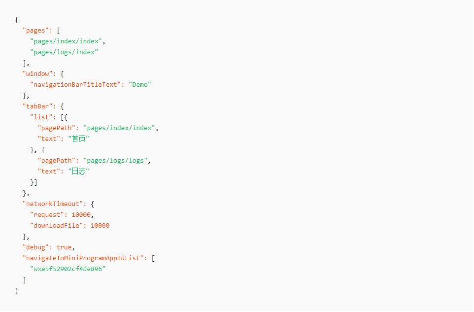

1.pages字段 —— 用于描述当前小程序所有页面路径，这是为了让微信客户端知道当前你的小程序页面定义在哪个目录。
2.window字段 —— 定义小程序所有页面的顶部背景颜色，文字颜色定义等。
其他配置项细节可以参考文档 小程序的配置 app.json 。
pages,window,tabBar,networkTimeout,debug,navigateToMiniProgramAppIdList
完整配置项说明请参考小程序全局配置
每一个小程序页面也可以使用同名 .json 文件来对本页面的窗口表现进行配置，页面中配置项会覆盖 app.json 的 window 中相同的配置项。
完整配置项细节可以参考文档 小程序页面配置。
WXSS (WeiXin Style Sheets)是一套样式语言，用于描述 WXML 的组件样式。
WXSS 用来决定 WXML 的组件应该怎么显示。
为了适应广大的前端开发者，WXSS 具有 CSS 大部分特性。同时为了更适合开发微信小程序，WXSS 对 CSS 进行了扩充以及修改。
与 CSS 相比，WXSS 扩展的特性有：
<navigator url="跳转路径">跳转路径</navigator>
wx.navigateTo({
url: "跳转路径",
success: function () {}
fail: function () {}
complete: function () {}
})